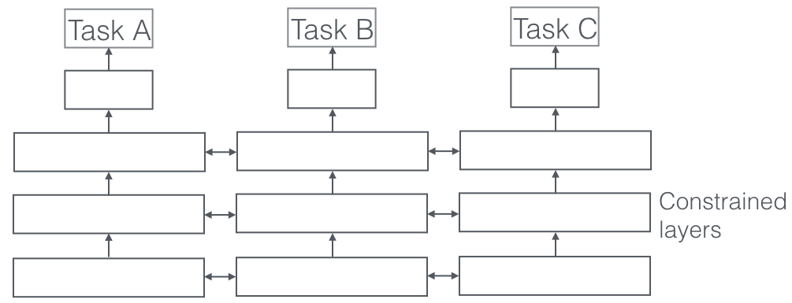

目录#
引言#
在机器学习(ML)中，我们通常关心的是针对特定指标的优化，无论这是某个基准上的得分还是业务KPI。为了做到这一点，我们通常训练一个模型或一组模型来执行我们想要的任务。然后，我们对这些模型进行微调和调整，直到它们的性能不再增加。
虽然我们通常可以通过这种方式达到可接受的表现，通过专注于我们的单一任务，我们忽略了那些可能帮助我们在我们关心的指标上做得更好的信息。具体来说，这些信息来自于相关任务的训练信号。通过在相关任务之间共享表示，我们可以使模型更好地概括原始任务。这种方法被称为多任务学习(MTL)，将是本文的主题。
从自然语言处理[1]和语音识别[2]到计算机视觉[3]和药物发现[4]，多任务学习已经成功地应用于机器学习的所有应用中。Mtl有多种形式:联合学习、学会学习、辅助任务学习，这些只是被用来指代它的一些名称。
即使只是优化一个损失的情况下，也会有一个辅助任务，将帮助改善你的主要任务。RichCaruana[5]简洁地总结了MTL的目标:“MTL通过利用相关任务的训练信号中包含的领域特定信息来提高泛化能力”。
我将首先从不同的角度来激励MTL。然后，我将介绍深度学习中MTL最常用的两种方法。随后，我将描述一些机制，一起说明为什么MTL在实践中起作用。在研究更先进的基于神经网络的MTL方法之前，我将通过讨论MTL中的文献来提供一些上下文。然后，我将介绍一些更强大的最近提出的方法MTL在深度神经网络。最后，我将介绍常用的辅助任务类型，并讨论如何为MTL提供一个好的辅助任务。
动机#
我们可以用不同的方式来激励多任务学习:
-从生物学的角度来说，我们可以把多任务学习看作是受到人类学习的启发。在学习新任务时，我们经常应用通过学习相关任务获得的知识。例如，婴儿首先学会识别面孔，然后可以应用这些知识识别其他物体。
-从教学的角度来看，我们通常首先学习任务，这些任务为我们提供了掌握更复杂技巧的必要技能。这对于学习正确的摔跤方式来说是正确的，例如柔道和编程。举个流行文化的例子，我们也可以看看《功夫梦》(1984),在电影中，宫城先生教空手道小子一些看似无关的任务，比如打磨地板和给汽车打蜡。然而，事后看来，这些东西反而使他具备了学习空手道相关的宝贵技能。
-最后，我们可以从机器学习的角度来激励多任务学习:我们可以把多任务学习看作是一种归纳迁移。归纳转移可以通过引入一种归纳偏见来帮助改进一个模型，这种偏见会导致一个模型偏好某些假设而非其他假设。例如，归纳偏差的一种常见形式是l1正则化，这导致了对稀疏解的偏好。在MTL的情况下，辅助任务提供了归纳偏差，导致模型偏好解释一个以上任务的假设。正如我们将很快看到的，这通常会导致更好地概括的解决方案。
深度学习的两种MTL方法#
硬参数共享#
硬参数共享是神经网络中最常用的MTL方法，可以追溯到[6]。它的应用通常是在所有任务之间共享隐藏层，同时保留几个特定于任务的输出层。
硬参数共享大大降低了过拟合的风险。事实上，[7]表明，过度拟合共享参数的风险是一个顺序n——其中n是任务数量:小于过度拟合任务特定参数，即输出层。这在直觉上是有道理的:我们同时学习的任务越多，我们的模型就越需要找到一个能够捕捉所有任务的表示，我们对原始任务的过度适应的机会就越少。
软参数共享#
在软参数共享中，每个任务都有自己的模型和参数。然后对模型参数之间的距离进行正则化，以使参数相似。例如，使用l2范数进行正则化，而[9]使用跟踪范数。

深层神经网络中用于软参数共享的约束条件受到了MTL正则化技术的极大启发，这些技术已经在其他模型中得到发展，我们将很快讨论。
为什么MTL有效#
尽管通过多任务学习获得的归纳偏差在直觉上似乎是可信的，但为了更好地理解MTL，我们需要研究其背后的机制。其中大多数最早由Caruana(1998)提出。对于所有的例子，我们假设我们有两个相关的tasksAa和bb，它们依赖于一个公共的隐藏层表示f。
隐式数据增强#
Mtl有效地增加了我们用来训练模型的样本量。
由于所有的任务都至少有些嘈杂，当我们在taskAa上训练一个模型时，我们的目标是学习任务a的一个很好的表示，理想地忽略数据相关的噪声，并且很好地进行概括。由于不同的任务具有不同的噪声模式，一个同时学习两个任务的模型能够学习更一般的表示。只学习任务a承担了任务a过度拟合的风险，而学习a和b共同使模型通过平均噪声模式得到更好的表示f。
注意力集中#
如果一个任务是非常嘈杂的，或者数据是有限的和高维的，那么模型很难区分相关的和不相关的特征。Mtl可以帮助模型将注意力集中在那些真正重要的特性上，因为其他任务将为这些特性的相关性或不相关性提供额外的证据。
窃听#
对于某些任务b来说，g很容易学习，而对于另一个任务a来说，g很难学习。这可能是因为a以一种更复杂的方式与特性交互，或者是因为其他特性阻碍了模型学习g的能力。通过MTL，我们可以允许模型窃听，即通过任务b学习g。最简单的方法是通过提示[10]，即直接训练模型来预测最重要的特征。
表征偏见#
Mtl 使模型偏向于其他任务也喜欢的表示形式。
这也将有助于模型推广到未来的新任务中，作为一个假设空间，这个空间在一个足够大的训练任务中表现良好，在学习新任务时也表现良好，只要它们来自相同的环境[11]。
正则化#
Mtl起到了正则化的作用,因为他降低了过拟合的风险以及模型Rademacher复杂性,即他适应随机噪声的能力
非神经模型中的 MTL#
为了更好地理解深层神经网络中的 MTL，我们现在将查看现有的文献中的线性模型，核方法和贝叶斯算法 MTL。 特别是，我们将讨论在多任务学习的历史中普遍存在的两个主要观点:
- 通过规范化实现任务之间的稀疏性;
- 以及建立任务之间的关系模型。
块(组)稀疏正则化#
请注意，文献中的许多 MTL 方法都处理同构设置: 它们假设所有任务都与单一输出相关，例如，多类 MNIST 数据集通常被转换为10个二进制分类任务。 最近的方法处理更加现实的、异构的设置，其中每个任务对应于一组唯一的输出。
现有的许多方法对模型参数做了一些稀疏性假设。 [12]假设所有型号共享一小部分特性。 就我们的任务参数 matrixA a 而言，这意味着除了少数行之外，所有行都是00，这只对应于所有任务中使用的少数特性。 为了加强这一点，他们将 l1 l1规范推广到 MTL 设置。 回想一下，l1 l1范数是参数总和的约束，它强制除了少数几个参数之外的所有参数都精确地为00
尽管这种块稀疏的正则化在直观上是合理的，但它非常依赖于任务之间共享特性的程度。 [16]表明，如果特征不重叠很多，l 1 / l q l1 / lq 正则化实际上可能比元素级 l1 l1正则化更糟糕。
学习任务关系#
虽然组稀疏性约束迫使我们的模型只考虑少数特性，但这些特性主要用于所有任务。 所有以前的方法都假定多任务学习中使用的任务是密切相关的。 但是，每个任务可能并不与所有可用的任务密切相关。 在这种情况下，与一个不相关的任务分享信息实际上可能会损害表现，这种现象被称为负迁移。
因此，我们希望利用先前的知识来表明某些任务是相关的，而其他任务则不是。 在此场景中，强制执行任务集群的约束可能更合适。 建议通过处罚我们的任务列矢量alpha1,alpha2….以及他们与以下约束的差异，来强加一个聚类约束
$$\Omega=|\bar{a}|^2+\dfrac{\lambda}{T}\sum^T_{t=1}|a_{\cdot,t}-\bar{a}|^2$$
以前的任务关系建模方法采用规范化，其他方法没有规范化: [24]是第一个提出使用 k 近邻的任务聚类算法的方法，而[25]从多个相关任务中学习共同的结构，并应用到半监督学习。
在多任务学习的任务关系学习的许多其他工作使用贝叶斯方法: [26]提出了一个多任务学习的贝叶斯神经网络通过放置一个先验的模型参数，以鼓励类似的参数跨任务。 通过推导共享协方差矩阵的参数，将高斯过程(GP)扩展到 MTL。 由于这是非常昂贵的计算，他们采取了一个稀疏近似方案，贪婪地选择最有价值的例子。 通过假设所有模型都是从一个共同的先验中取样，也可以将 GP 用于 MTL。
将高斯分布作为每个任务特定层的先验分布。 为了鼓励不同任务之间的相似性，他们提出使平均任务依赖，并引入混合分布的任务聚类。 重要的是，它们需要任务特征来定义集群和需要预先指定的混合物数量。
其他方法侧重于在线多任务学习设置: [33]调整一些现有的方法，如 Evgeniou 等人(2005)的方法，以适应在线设置。 他们还提出了正则化感知器的 MTL 扩展，将任务相关性编码在矩阵中。 他们使用不同的正则化形式来偏置这个任务关联矩阵，例如任务特征向量的贴近度或者跨越子空间的维数。 重要的是，与以前的一些方法类似，它们要求提前提供构成这个矩阵的任务特征。 然后通过学习任务关系矩阵来扩展先前的方法。
反过来，通过假设存在少量潜在的基本任务，允许来自不同组的两个任务重叠。 然后，他们将每个实际任务 t 的参数矢量 t 建模为这样一个线性组合: 在 Lst 处的参数矢量 t 是包含 k 个潜在任务的参数向量的矩阵，而 st ∈ r k st ∈ r k 是包含线性组合系数的向量。 此外，它们还限制潜在任务中的线性组合分布为稀疏; 两个任务之间稀疏模式的重叠控制了这些任务之间的共享量。 最后，[37]学习一小组共享的假设，然后将每个任务映射到一个单一的假设。
最近关于深度学习的 MTL 的工作#
虽然最近许多深度学习方法都使用了多任务学习——无论是显式的还是隐式的——作为他们模型的一部分(下一节将介绍突出的例子) ，但是他们都使用了我们前面介绍的两种方法，硬参数和软参数共享。 相比之下，只有少数几篇论文着眼于在深层神经网络中开发更好的 MTL 机制。
深层关系网络
1
在计算机视觉的 MTL 中，各种方法通常共享卷积层，而学习任务特定的完全连接层。 通过提出深层关系网络来改进这些模型。 除了图3中显示的共享层和特定任务层的结构之外，它们还在完全连接的层上放置矩阵先验，这使得模型能够学习任务之间的关系，类似于我们之前看到的一些贝叶斯模型。 然而，这种方法仍然依赖于一种预先定义的共享结构，这种结构可能足以解决经过充分研究的计算机视觉问题，但是对于新任务来说很容易出错。
完全自适应的特征共享
1
从另一个极端开始，[39]提出了一种自下而上的方法，这种方法从一个薄的网络开始，在训练过程中使用一种标准，促进类似任务的分组，贪婪地扩大网络。 动态创建分支的 widing 过程可以在图4中看到。 然而，贪婪的方法可能无法发现一个全局最优的模型，而分配每个分支到一个任务却不允许模型学习任务之间更复杂的交互。
十字绣网络
1
[40]从两个独立的模型结构开始，就像软参数共享一样。 然后，他们使用所谓的十字绣单元，让模型决定以何种方式特定任务的网络利用其他任务的知识，通过学习前面各层的输出线性组合。 他们的架构可以在图5中看到，其中他们只放置十字绣单位后，池和完全连接的层。
低层监督
1
相比之下，在自然语言处理(NLP)中，最近的工作集中于**为多任务学习寻找更好的任务层次结构**:[41]表明，低层任务，即通常用于预处理的 NLP 任务，如词性标注和命名实体识别，当用作辅助任务时，应该在较低层进行监督。
联合多任务模型
1
基于这一发现，[42]预先定义了一个由几个 NLP 任务组成的层次结构，如图6所示，作为多任务学习的联合模型。
以不确定性加权亏损
1 | 与其学习共享的结构，[43]考虑每个任务的不确定性，采取一种正交的方法。 然后通过推导基于任务相关不确定性最大高斯似然的多任务损失函数来调整每个任务在成本函数中的相对权重。 它们用于逐像素深度回归、语义分割和实例分割的体系结构如图7所示。 |
Mtl 的张量因子分解
1
最近的工作试图将现有的 MTL 方法推广到深度学习: [44]将前面讨论过的一些矩阵分解方法推广到使用张量分解将模型参数分解为每一层的共享参数和任务特定参数。
水闸网络
1
最后，我们提出了一个概括了基于深度学习的 MTL 方法的模型，例如硬参数共享和跨缝网络，块稀疏正则化方法，以及最新的自然语言处理方法来创建一个任务层次。 这个模型，如图8所示，允许学习哪些层和子空间应该被共享，以及在哪些层网络已经学习了输入序列的最佳表示。
我应该在我的模型中分享什么？#
Mtl 历史上的大多数方法都集中在任务从相同分布中提取的场景上(Baxter，1997)。 虽然这种情况有利于共享，但并不总是成立。 因此，为了开发 MTL 的健壮模型，我们必须能够处理不相关或只是松散相关的任务。
虽然针对深度学习的 MTL 的早期工作已经预先指定了每个任务配对应该共享哪些层，但是这种策略并不具有可伸缩性，而且严重偏向 MTL 架构。 最初由 Caruana (1996)提出的硬参数共享技术，在20年后仍然是标准技术。 虽然在许多场景中很有用，但如果任务之间没有密切关系或者需要在不同层次上进行推理，硬参数共享就会很快崩溃。因此，最近的方法着眼于了解应该分享什么，并且通常比硬参数分享更有效。 此外，赋予我们的模型学习任务层次结构的能力是有帮助的，特别是在需要不同粒度的情况下。
正如最初提到的，我们正在做 MTL 尽快我们是优化一个以上的损失函数。 与其限制我们的模型将所有任务的知识压缩到相同的参数空间中，不如利用我们已经讨论过的 MTL 的先进技术，使我们的模型能够了解任务之间应该如何相互作用。
什么辅助任务是有帮助的？#
在本节中，我们讨论了不同的辅助任务，这些辅助任务可用于利用 MTL，即使我们只关心一个任务。 然而，我们仍然不知道什么辅助任务在实践中是有用的。 辅助任务的发现在很大程度上是基于这样的假设，即辅助任务应该以某种方式与主任务相关，并且辅助任务应该有助于预测主任务。
然而，我们仍然不清楚两个任务何时应该被认为是相似或相关的。 Caruana (1998)将两个任务定义为相似的，如果它们使用相同的特性来做决定。 Baxter (2000)只在理论上认为相关任务具有共同的最优假设类，即具有相同的归纳偏差。 如果两个任务的数据都可以使用一组转换f从一个固定的概率分布生成，那么 areF 提出的两个任务是相关的。 虽然这样可以推理出不同传感器为同一分类问题收集数据的任务，例如用不同角度和光照条件的摄像机数据进行物体识别，但不适用于不处理同一问题的任务。 薛等人(2007)最后提出，如果两个任务的分类边界是相似的，即参数向量是相近的。
尽管在理解任务相关性方面取得了这些早期的理论进展，但是我们在实现这一目标方面还没有取得很大的进展。 任务相似性不是二进制的，而是存在于一个范围内的。 更多类似的任务应该对 MTL 有更多帮助，而较少类似的任务应该帮助较少。 允许我们的模型学习与每个任务分享什么，可能会让我们暂时绕过理论的缺乏，更好地利用甚至只是松散相关的任务。 然而，我们也需要在多任务学习方面发展一个更有原则的任务相似性概念，以便知道我们应该更喜欢哪些任务。
最近的工作[55]发现，对于 NLP 中的序列标签问题，具有紧凑和均匀标签分布的辅助任务更为可取，我们已经在实验中证实了这一点(Ruder 等人，2017)。 此外，研究发现，主要任务在非停滞的辅助任务中很可能很快停滞不前[56]。
然而，这些实验到目前为止在范围上还是有限的，最近的发现仅仅提供了对神经网络中的多任务学习进行更深入理解的第一线索。
总结#
在这篇综述中，我回顾了多任务学习的文献历史以及最近关于深度学习的 MTL 的工作。 虽然 MTL 正在被越来越频繁的使用，20年前的硬参数共享范例仍然是普遍的神经网络为基础的 MTL。 然而，在学习分享什么方面的最新进展是有希望的。 与此同时，我们对任务的理解—-它们的相似性、关系、层次以及对 MTL 的好处—-仍然是有限的，我们需要更多地了解它们，以便更好地理解 MTL 相对于深层神经网络的泛化能力。